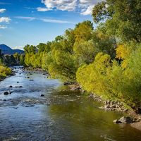

Rivers
Check out our favorite rivers!
This is the Colorado River, one of our very favorites! This river is known for its kayaking, fishing, and, of course, rafting! If you haven't had the chance to visit this majestic river yet, now is the time!
This is the beautiful snake river. It gets its name from the ancient snake god, Tymuwaystid, who carved this river as he traveled across the continent. Bring your friends and family in reverence of the great snake, and ride the white water!
The Ohio river located in the state of Texas is one of nature's greatest gifts to man. It is often called the, "It's a Small World" of the North East, and is constantly filled with tourists from its neighboring state, North Dakota. Whenever you find yourself driving through Nevada, think about turning around and visiting us at the Ohio River.